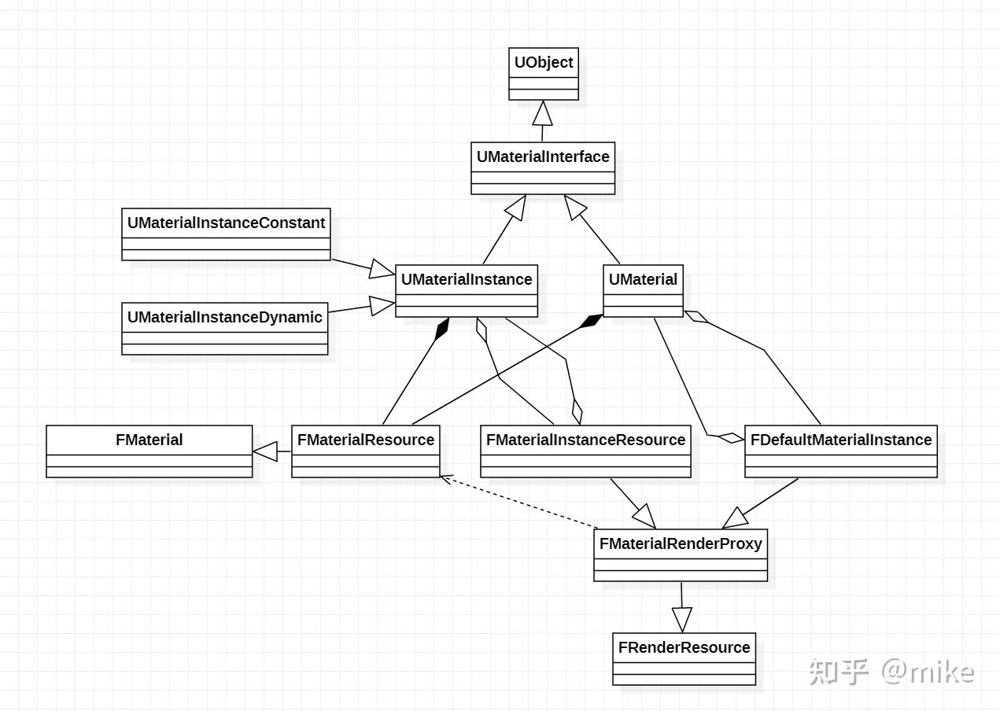

# 材质系统解析
UMaterial 是 material 的资源，就是我们在 constant 上的 material，material 真正被用于运算的好似 UMaterialInterface。UMaterialInterface 是材质的基类，UMaterial 和 UMaterialInstance 都派生自它
一个 UMaterial 里面会有很多 FMaterial，一个 FMaterial 会存储特定平台，特定质量等级的 Shader 和资源，因为一个 UMaterial 有很多平台，质量等级的储存需求，所以会存很多 FMaterial。
FMaterialResource 是 FMaterail 的子类，用于 UMaterial 的渲染，FMaterialResource 代表的是从一个截面 (在某个 Render API FeatureLevel、指定的平台下、指定材质品质预设下）时它对应的 UMaterial 的具体呈现。同时 FMaterialResource 不是持有一个 Shader, 而是持有在指定截面下此材质所有的 Shader 变体（Shader Permutations)。
FMaterialResource 中有一个 ShaderMap 来管理不同版本的 FShader，ShaderMap 中管理的 Shader 有三个维度分别是 VertexFactory，ShaderType (对应 Pass 的 Shader）以及变体排序。Shader 具体的编译流程参考上面的流程图。Shader 编译好后会被缓存起来，对于 Shader 来说有两种缓存，一种是存于 DDC 的离线数据，常用来加速编辑器阶段和开发阶段的效率，另一种是运行时的 Shader 缓存，早期的 UE 由 FShaderCache 承担，但 UE4.26 已经取消了 FShaderCache，由 FShaderPipelineCache 取而代之
每个 FMaterial 都有一个 FMaterialShaderMap（游戏线程一个，渲染线程一个），如果要获取 FMaterial 的指定类型的 Shader，就需要从该 FMaterial 的 FMaterialShaderMap 实例中获取，从而完成了它们之间的链接。
FMeshMaterialShaderMap 则存储和管理 FMeshMaterialShader。FMeshMaterialShaderMap 通常不能单独被创建，而是附加在 FMaterialShaderMapContent 之中，随着 FMaterialShaderMapContent 一起被创建和销毁，
FMaterialShaderMap 存储和管理着一组 FMaterialShader 实例的对象，他是 FShaderMapContent 的子类，由于 FMaterialShaderMap 跟材质蓝图绑定的，因为它是 FMaterial 的一个成员，里面有个 Compile 函数是编译一个材质的着色器并缓存到 shader map 中。这个函数会分配 shadermap 编译的 id，然后调用 SubmitCompileJobs 函数，创建编译任务。
FMaterialRenderProxy 是 FMaterial 用于渲染线程的代理，它可以透过 FMaterail 和 UMaterialInterface 访问到 Shader、渲染状态，光照模型等所有用户设置好的材质参数。
# Material 关系图

**UObject：**UE4 的基类，里面包含了内存管理反射等基础功能。
**UMaterialInterface：** 逻辑端材质抽象类。
**UMaterial：* 对应编辑器中的材质模板，里面存储了 TArray<FMaterialResource> MaterialResources 成员变量，为什么会有多个 FMaterialResource？这里存储了对应不同平台以及不同效果等级的材质，是一个 2 维的组合关系。
**UMaterialInstance：* 材质实例的抽象类，UE4 将材质分为材质模板和材质实例，不同物体可能使用相同材质，但是材质参数不同，这里就对应了材质模板和材质实例的概念。里面同样存储了 TArray<FMaterialResource> StaticPermutationMaterialResources 成员变量，对应不同平台及不同效果等级的材质。
UMaterialInstanceConstant：这里对应了编辑器中的材质实例，这类材质暴露的参数可以在编辑器中修改，在运行时无法修改。因为 UMaterialInstanceConstant 的参数在运行时是确定的，也就是说渲染状态是确定，相比于 UMaterialInstanceDynamic 可以做一些渲染状态排序的优化工作。
**UMaterialInstanceDynamic：** 如果想要在运行时动态的修改材质参数，需要在运行时创建 UMaterialInstanceDynamic 材质实例，然后设置想要改变的参数。
**FMaterialRenderProxy：** 渲染端材质的代理抽象类，以我目前的认知，UE4 里面的 Proxy 设计的目的是将逻辑线程和渲染线程交互的代码统一写到 Proxy 中，这里涉及到多线程之间的数据同步，复杂容易出错，因此单独弄一个 Proxy 类来封装这块的代码，方便定位和查找问题。
**FDefaultMaterialInstance：**UMaterial 的渲染代理类。
**FMaterialInstanceResource：**UMaterialInstance 的渲染代理类。
以上介绍的与材质相关的类，都是逻辑线程 (主线程) 管理的类。
FMaterial： 每一个 FMaterialResource 对应一个 FMaterial 渲染层对应的材质类，里面封装了全部的渲染状态，包括使用的顶点工厂，shader 代码，PSO 信息等，不同的 Pass 在收集网格信息的时候会拿到 FMaterial 将其组织成 Batch。FMaterial 里面存储了两个最重要的数据 TRefCountPtr<FMaterialShaderMap> GameThreadShaderMap 和 TRefCountPtr<FMaterialShaderMap> RenderingThreadShaderMap，分别对应逻辑线程和渲染线程中的 shader 资源。ShaderMap 也是一个 2 维组合，分别对应不同顶点工厂以及不同变体，说到这里就可以发现 UE4 中的一个材质对应的 shader 数量是一个四维的组合关系，因此优化 UE4 中的 shader 数量是一个很重要的工作。
**FMaterialResource：** 该类是 FMaterial 的实现类，没有什么过多需要介绍的。
对于UMaterial编译，其生成Shader的入口函数有二
1.一个用于资源Cooking，名为CacheResourceShadersForCooking。
2.一个用于材质编辑和引擎运行时渲染，名为CacheResourceShadersForRendering，
首先UMaterial::CacheResourceShadersForRendering中会创建FMaterialResource(FMaterial)，可以看到创建FMaterialResource需要根据FeatureLevel和ActiveQualityLevel两个维度来确定，换句话说UMaterial中存储了多个FMaterialResource，每个FMaterialResource是由FeatureLevel和ActiveQualityLevel决定的。
然后进入到另外一个关键函数FMaterial::BeginCompileShaderMap，这个函数会调用MaterialTranslator.Translate();将材质编辑器中的节点转换成shader代码，并生成材质的编译环境。
接下来会调用FMaterialShaderMap::Compile函数，这个函数会分配shadermap编译的id，然后调用SubmitCompileJobs函数，创建编译任务。
UMaterialExpression 是材质节点的基类，UMaterialExpression 继承自 UObject。其定义了通用的材质节点的属性和方法。每个材质节点 UMaterialGraphNode 都有一个 UMaterialExpression 实例。
UMaterialGraphNode 即我们在材质编辑器创建的材质节点，继承的父类依次是 UMaterialGraphNode_Base、UEdGraphNode
FExpressionInput 是材质节点的输入，它是个结构体，持有一个 UMaterialExpression 指针，并指定它自己取的是该 Expression 的哪个输出。它基本上就是对 UMaterialExpression 的一个简单的封装
UMaterialGraph 是 UMaterial 的一个成员，用来存储编辑器产生的材质节点和参数。
FHLSLMaterialTranslator 继承自 FMaterialCompiler，作用就是将材质的表达式转译成 HLSL 代码，填充到 MaterialTemplate.ush 的宏和空缺代码段。
FHLSLMaterialTranslator 实现了 FMaterialCompiler 的所有抽象接口，它的核心核心成员和接口如下：
- FMaterial* Material：编译的目标材质。
- FMaterialCompilationOutput& MaterialCompilationOutput：编译后的结果。
- FString MaterialTemplate：待填充或填充后的 MaterialTemplate.ush 字符串。
- Translate ()：执行 HLSL 转译，将表达式转译成代码块保存到对应的属性槽中。
- GetMaterialShaderCode ()：将材质的宏、属性、表达式等数据填充到 MaterialTemplate.ush 并返回结果。
# 编译流程
材质 ShaderMap 的编译入口在 FMaterial 的以下两个接口：
- FMaterial::BeginCompileShaderMap
- FMaterial::GetMaterialExpressionSource

FHLSLMaterialTranslator 的几个重要接口：
- Translate：转译材质蓝图的材质节点表达式，将所有材质属性的编译结果填充到格子的 FShaderCodeChunk 中。
- GetMaterialEnvironment：处理材质蓝图的编译环境（宏定义）。
- GetMaterialShaderCode：填充 MaterialTemplate.ush 的空缺代码，根据 Translate 编译的 FShaderCodeChunk 对应的材质属性接口，以及其它的宏定义、结构体、工具类接口。
经过 FHLSLMaterialTranslator 的编译之后，将获得完整的材质 Shader 代码，便会送入 FMaterialShaderMap::Compile 接口进行编译，编译后的 shader 代码保存到 FMaterialShaderMap 之中。
调用 FMaterial::BeginCompileShaderMap 的接口只有 FMaterial::CacheShaders，调用 FMaterial::CacheShaders 的核心调用堆栈如下：
- UMaterial::CacheResourceShadersForRendering
- UMaterial::CacheShadersForResources
- FMaterial::CacheShaders
- UMaterial::CacheShadersForResources
- UMaterialInstance::CacheResourceShadersForRendering
- UMaterialInstance::CacheShadersForResources
- FMaterial::CacheShaders
- UMaterialInstance::CacheShadersForResources
而 CacheResourceShadersForRendering 调用逻辑很多，包含 UMaterial 和 UMaterialInstance 的各种设置接口：
- SetMaterialUsage
- UpdateMaterialShaderCacheAndTextureReferences
- PostLoad
- PostEditChangePropertyInternal
- ForceRecompileForRendering
- AllMaterialsCacheResourceShadersForRendering
以上接口中，必定会调用的是 PostLoad。

ShaderMap 是存储编译后的 shader 代码，分为 FGlobalShaderMap、FMaterialShaderMap、FMeshMaterialShaderMap 三种类型。
| 类型 | 组成 |
|---|---|
| GlobalShader | Shader_x.usf |
| MaterialShader | Shader_x.usf + MaterialTemplate_x.usf |
| MeshMaterialShader | Shader_x.usf + MaterialTemplate_x.usf + VertexFactory_x.usf |
其中：
- Shader_x.usf：引擎 Shader 目录下的已有文件，如 DeferredLightVertexShaders.usf、DeferredLightPixelShaders.usf。
- MaterialTemplate_x.usf：FHLSLMaterialTranslator 编译材质蓝图后填充 MaterialTemplate.ush 的代码。
- VertexFactory_x.usf：引擎 Shader 目录下的已有顶点工厂文件代码，如 LocalVertexFactory.ush、GpuSkinVertexFactory.ush。
另外，生成同个材质蓝图的不同着色频率的 shader 代码，所需的数据也有所不同：
| 着色频率 | 组成 |
|---|---|
| PixelShader | MaterialTemplate_x.usf + VertexFactory_x.usf + PixelShader_x.usf |
| VertexShader | MaterialTemplate_x.usf + VertexFactory_x.usf + VertexShader_x.usf |
| GeometryShader | MaterialTemplate_x.usf + VertexFactory_x.usf + VertexShader_x.usf |
其中：
- PixelShader_x.usf：某个渲染 Pass 的 PixelShader 代码，如 BasePassPixelShader.usf、ShadowDepthPixelShader.usf、DepthOnlyPixelShader.usf。
- VertexShader_x.usf：某个渲染 Pass 的 VertexShader 代码，如 BasePassVertexShader.usf、ShadowDepthVertexShader.usf、DepthOnlyVertexShader.usf。
- MaterialTemplate_x.usf：用户的连连看就是填充里面的函数，然后被其他 VS 和 Ps 调用里面的函数，接口是 Pixel shader 是
CalcMaterialParametersEx这个函数，GetMaterialWorldPositionOffset是 wpo 接口，其中 VertexInterpolator 节点最多接受 16 个参数 4 个 vector4
# ShaderMap 关系图

FGlobalShaderMap 保存并管理着所有编译好的 FGlobalShader 代码
每个 FMaterial 都有一个 FMaterialShaderMap（游戏线程一个，渲染线程一个），如果要获取 FMaterial 的指定类型的 Shader，就需要从该 FMaterial 的 FMaterialShaderMap 实例中获取，从而完成了它们之间的链接。
FMeshMaterialShaderMap 则存储和管理 FMeshMaterialShader。FMeshMaterialShaderMap 通常不能单独被创建，而是附加在 FMaterialShaderMapContent 之中，随着 FMaterialShaderMapContent 一起被创建和销毁，
FMaterialShaderMap 存储和管理着一组 FMaterialShader 实例的对象，他是 FShaderMapContent 的子类，由于 FMaterialShaderMap 跟材质蓝图绑定的，因为它是 FMaterial 的一个成员，里面有个 Compile 函数是编译一个材质的着色器并缓存到 shader map 中。这个函数会分配 shadermap 编译的 id，然后调用 SubmitCompileJobs 函数，创建编译任务。